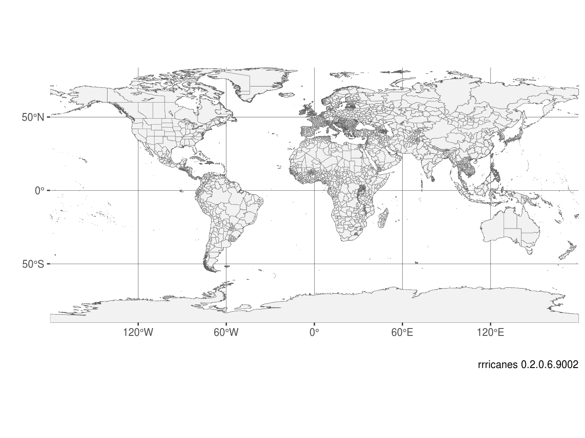
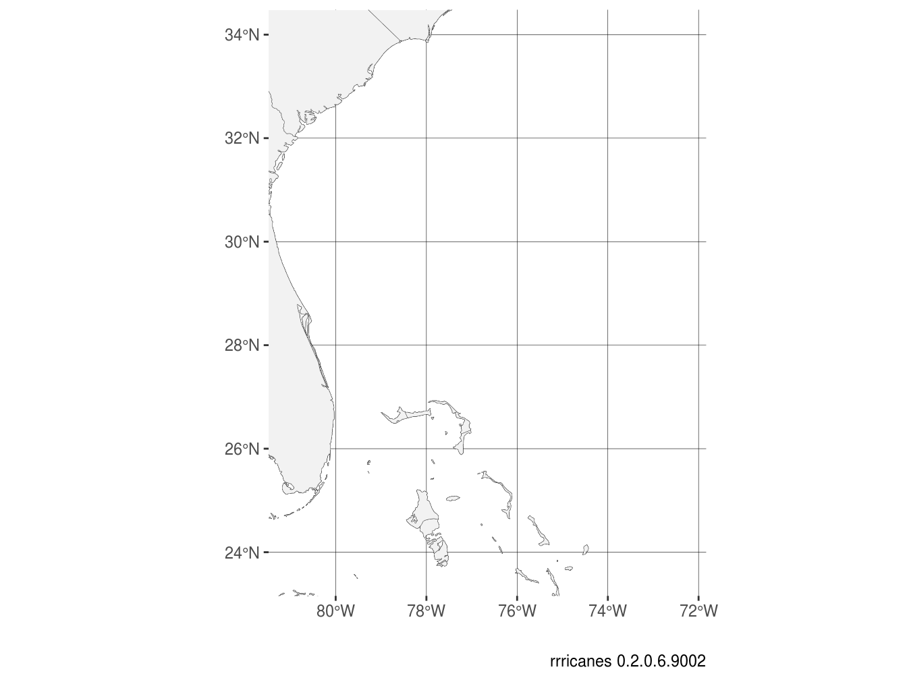
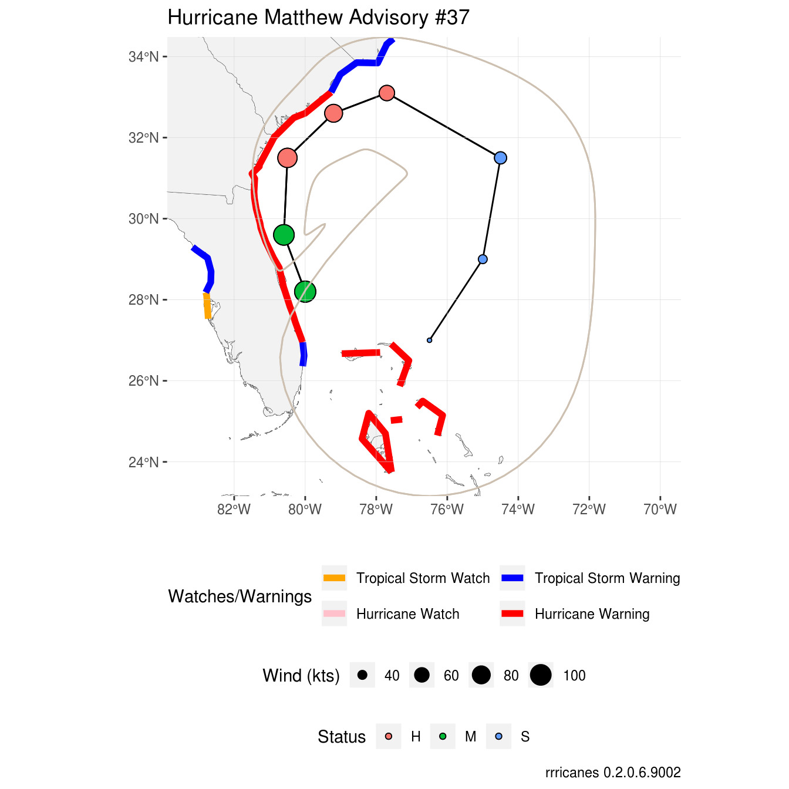
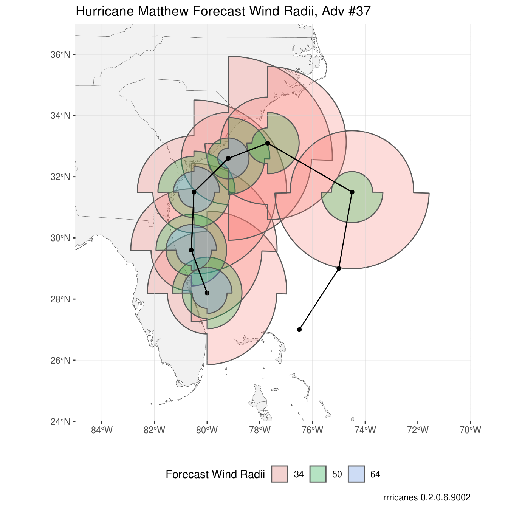
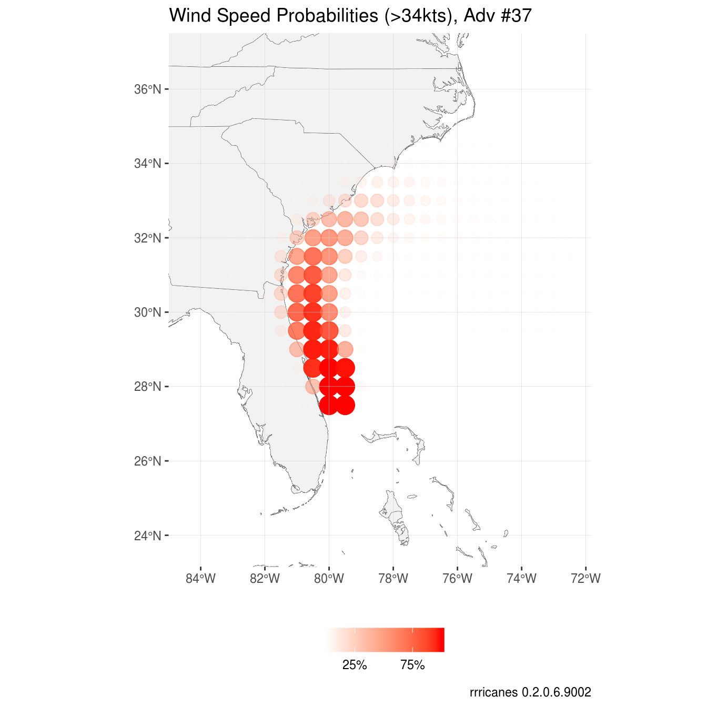
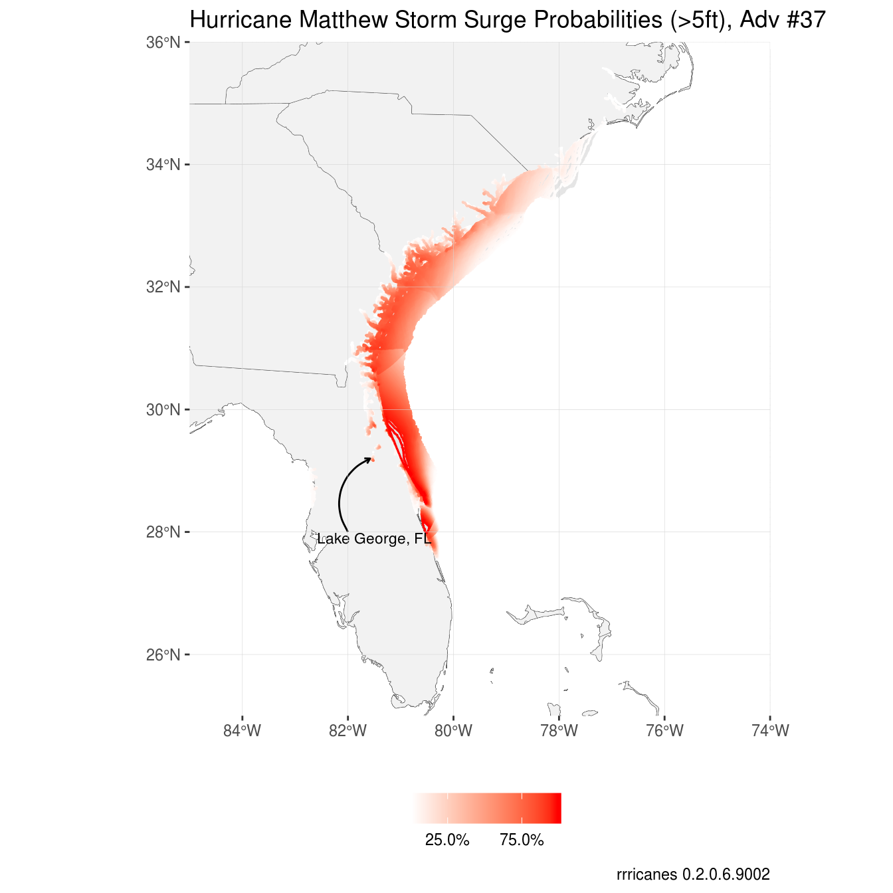

Most storms will contain a variation of GIS datasets that can be plotted with ggplot2. The helper functions for this have the prefix ‘gis’.
All products are experimental and there maybe fluctuations particularly in current datasets.
In general, datasets are available for storms dated back to 1998. However, products such as Wind Speed Probabilities only go back to 1999.
Some datasets require the use of the storm key and an optional advisory. Other products require a datetime value and cannot be isolated by storm key or advisory. The datetime values are not based on the issue time of the advisory, but rather three hours prior. For example, if you are seeking a dataset where the forecast/advisory was issued at 9:00AM UTC, you will want the dataset for 6:00AM UTC. This will be explained a little further below.
Build a Tracking Chart
As of version 0.2.7, the built-in tracking chart functions have been removed. Users are encouraged to use the rnaturalearthdata and associated packages to build tracking charts.
The rnaturalearthdata package has many shapefile datasets that can be used to make maps. For this article I will only need countries and states. I will use the resolution of 10 nautical miles (available in the rnaturalearthhires package). Each dataset is named countries10 and states10.
p <-
ggplot() +
geom_sf(
data = sf::st_as_sf(rnaturalearthhires::countries10),
fill = "gray95",
color = "black",
size = 0.1
) +
geom_sf(
data = sf::st_as_sf(rnaturalearthhires::states10),
fill = "gray95",
size = 0.1
)
p
I’ll also remove the padding around the plot and change the color of the seas (panel.background).
p <-
p +
scale_x_continuous(
expand = c(0, 0)
) +
scale_y_continuous(
expand = c(0, 0)
) +
theme(
panel.background = element_rect(fill = "white"),
panel.grid.major = element_line(color = "black", size = 0.1)
) +
labs(
x = "",
y = "",
caption = sprintf("rrricanes %s", packageVersion("rrricanes"))
)
p
GIS Datasets
There are several datasets that are published for active cyclones. The following functions are designed to return the URL to those datasets:
gis_advisorygis_prob_storm_surgegis_windfield-
gis_latest(only for active storms)
It’s important to note that not every storm will have a dataset available. Nor are datasets consistent from one storm to the next. For example, as we’ll see below, a forecast cone should have two polygons for a 72-hour and 120-hour forecast; in this example, they are both 120-hours.
Let’s take a look at Hurricane Matthew (AL142016) and focus on advisory 37.
Data Scraping
The functions listed above do not retrieve the data. They only return the URLs. This is to give you the opportunity to modify your requests to get the specific data needed, if it exists.
gis_advisory
The gis_advisory function returns the URL for the GIS dataset by key and advisory number. Remember, a storm’s key should always be eight alphanumeric characters;
Basin identifier (“AL”, “CP”, or “EP”)
Storm number for the year
The four digit year
The fstadv product will always have the storm key. In earlier years, the “year” portion of the key was only the year without the century; you will need to add it.
## function (key, advisory = as.character())
## NULLWe can test that an advisory package does exist for our specific advisory.
## [1] "https://www.nhc.noaa.gov/gis/forecast/archive/al142016_5day_037.zip"This should work.
gis_windfield
The gis_windfield product is relatively new so it may not exist for some storms. As with gis_advisory, we only need the storms’ key and advisory.
## function (key, advisory = as.character())
## NULL## [1] "https://www.nhc.noaa.gov/gis/forecast/archive/al142016_fcst_037.zip"
gis_prob_storm_surge
The function gis_prob_storm_surge also uses the key variable, but not the advisory; instead, it uses datetime.
There are two types of products that can be retrieved, “esurge” and “psurge”. psurge shows the probability of a specific height (in feet) of storm surge affecting an area. Values between 0 and 20 can be used.
gis_prob_storm_surge(
key = key,
datetime = "2016100706",
products = list(
# esurge = 10
psurge = 5
)
)In the example above, we are requesting the probabilities of a 5-foot storm surge affecting the coastline and inland waterways.
esurge shows the probability of a specific storm surge height exceeding the forecast height. Valid values are 10, 20, 30, 04, and 50. Note the commented section in the code above.
The products parameter expects a list, though you do not need to include both products. Additionally, each product expects a numeric or numeric vector. If you make a broad general request, the National Hurricane Center requests no more than 80 requests per 10 seconds, so please be respectful. Unlike retrieving text products, there is no throttle in this package to download GIS datasets.
Regarding datetime, this value should be that of the advisory time minus 3 hours not including minutes and seconds. Let’s get that value for Matthew’s #37 advisory.
datetime <-
get_storms(years = "2016", basins = "AL") %>%
filter(Name == "Hurricane Matthew") %>%
pull(Link) %>%
get_fstadv() %>%
filter(Adv == adv) %>%
pull(Date)## Registered S3 method overwritten by 'httr':
## method from
## as.character.form_file crul# Subtract 3 hours
datetime <- datetime - 3 * 60 * 60
# Turn into string without the seconds. Format is YYYYMMDDHH
datetime <- as.character.Date(datetime, "%Y%m%d%H")
datetime## [1] "2016100706"Let’s make sure we can get a psurge 5 product for this datetime value.
## [1] "https://www.nhc.noaa.gov/gis/storm_surge/al142016_psurge5_2016100706.zip"Looks good.
gis_wsp
Wind speed probabilities exist in the gis_wsp datasets. Like gis_prob_storm_surge, we will need datetime, but we will not need key. The last parameter is res (resolution). Valid values are 5, 0.5, and 0.1 degrees. The default is all three. Not all resolutions will be available for all storms.
## function (datetime, res = c(5, 0.5, 0.1))
## NULL## [1] "https://www.nhc.noaa.gov/gis/forecast/archive/2016100706_wsp_120hrhalfDeg.zip"Downloading Data
Now that we’ve explored the various functions, let’s go about downloading the datasets to plot. For efficiency, I use a lot of purrr mapping functions here, loading each step into one variable.
First, I want to load all of my URLs into one vector.
# Get URLs of GIS datasets to analyze
urls <- c(
# Advisory package
gis_advisory(key = key, advisory = adv),
# Wind field (initial and forecast) package
gis_windfield(key = key, advisory = adv),
# Storm surge probability package
gis_prob_storm_surge(
key = key,
products = list(psurge = 5),
datetime = datetime
),
# Wind speed probability package
gis_wsp(datetime = datetime, res = 0.5)
)Previously, gis_download would download the datasets, extract the shapefiles and convert them, if possible, into dataframes. Thankfully, this is no longer necessary with various improvements in the sp and ggplot2 packages. Now, the gis_download function will only download the zip files into a specified directory. For this vignette, we’ll use a temporary directory, tempdir.
# Set our download directory
destdir <- tempdir()
# Download datasets
file_list <-
urls %>%
purrr::map(gis_download, destdir) %>%
purrr::flatten_chr()
file_list## [1] "al142016-037_5day_lin.dbf"
## [2] "al142016-037_5day_pgn.dbf"
## [3] "al142016-037_5day_pts.dbf"
## [4] "al142016-037_ww_wwlin.dbf"
## [5] "al142016-037_5day_lin.prj"
## [6] "al142016-037_5day_pgn.prj"
## [7] "al142016-037_5day_pts.prj"
## [8] "al142016-037_ww_wwlin.prj"
## [9] "al142016-037_5day_lin.shp"
## [10] "al142016-037_5day_pgn.shp"
## [11] "al142016-037_5day_pts.shp"
## [12] "al142016-037_ww_wwlin.shp"
## [13] "al142016-037_5day_lin.shx"
## [14] "al142016-037_5day_pgn.shx"
## [15] "al142016-037_5day_pts.shx"
## [16] "al142016-037_ww_wwlin.shx"
## [17] "al142016-037_5day_lin.shp.xml"
## [18] "al142016-037_5day_pgn.shp.xml"
## [19] "al142016-037_5day_pts.shp.xml"
## [20] "al142016-037_ww_wwlin.shp.xml"
## [21] "al142016_2016100706_forecastradii.dbf"
## [22] "al142016_2016100706_forecastradii.prj"
## [23] "al142016_2016100706_forecastradii.shp"
## [24] "al142016_2016100706_forecastradii.shp.xml"
## [25] "al142016_2016100706_forecastradii.shx"
## [26] "al142016_2016100706_initialradii.dbf"
## [27] "al142016_2016100706_initialradii.prj"
## [28] "al142016_2016100706_initialradii.shp"
## [29] "al142016_2016100706_initialradii.shp.xml"
## [30] "al142016_2016100706_initialradii.shx"
## [31] "al142016_2016100706_gt5.dbf"
## [32] "al142016_2016100706_gt5.prj"
## [33] "al142016_2016100706_gt5.shx"
## [34] "al142016_2016100706_gt5.txt"
## [35] "al142016_2016100706_gt5.ave"
## [36] "al142016_2016100706_gt5.shp.xml"
## [37] "al142016_2016100706_gt5.shp"
## [38] "2016100706_wsp34knt120hr_halfDeg.dbf"
## [39] "2016100706_wsp34knt120hr_halfDeg.prj"
## [40] "2016100706_wsp34knt120hr_halfDeg.shp"
## [41] "2016100706_wsp34knt120hr_halfDeg.shp.xml"
## [42] "2016100706_wsp34knt120hr_halfDeg.shx"
## [43] "2016100706_wsp34knt120hr_halfDeg.txt"
## [44] "2016100706_wsp50knt120hr_halfDeg.dbf"
## [45] "2016100706_wsp50knt120hr_halfDeg.prj"
## [46] "2016100706_wsp50knt120hr_halfDeg.shp"
## [47] "2016100706_wsp50knt120hr_halfDeg.shp.xml"
## [48] "2016100706_wsp50knt120hr_halfDeg.shx"
## [49] "2016100706_wsp50knt120hr_halfDeg.txt"
## [50] "2016100706_wsp64knt120hr_halfDeg.dbf"
## [51] "2016100706_wsp64knt120hr_halfDeg.prj"
## [52] "2016100706_wsp64knt120hr_halfDeg.shp"
## [53] "2016100706_wsp64knt120hr_halfDeg.shp.xml"
## [54] "2016100706_wsp64knt120hr_halfDeg.shx"
## [55] "2016100706_wsp64knt120hr_halfDeg.txt"There are a lot of files here. Thankfully, we only care about the shapefiles (marked by the “.shp” extension). Let’s filter those.
## [1] "al142016-037_5day_lin.shp"
## [2] "al142016-037_5day_pgn.shp"
## [3] "al142016-037_5day_pts.shp"
## [4] "al142016-037_ww_wwlin.shp"
## [5] "al142016_2016100706_forecastradii.shp"
## [6] "al142016_2016100706_initialradii.shp"
## [7] "al142016_2016100706_gt5.shp"
## [8] "2016100706_wsp34knt120hr_halfDeg.shp"
## [9] "2016100706_wsp50knt120hr_halfDeg.shp"
## [10] "2016100706_wsp64knt120hr_halfDeg.shp"We can use sf::st_read to read in each shapefile as a shapefile dataframe. The output is quite verbose; you can pass the parameter quiet as TRUE.
## Reading layer `al142016-037_5day_lin' from data source `/tmp/RtmpJnuPnX/al142016-037_5day_lin.shp' using driver `ESRI Shapefile'
## Simple feature collection with 2 features and 7 fields
## geometry type: LINESTRING
## dimension: XY
## bbox: xmin: -80.6 ymin: 27 xmax: -74.5 ymax: 33.1
## epsg (SRID): NA
## proj4string: +proj=longlat +a=6371200 +b=6371200 +no_defs
## Reading layer `al142016-037_5day_pgn' from data source `/tmp/RtmpJnuPnX/al142016-037_5day_pgn.shp' using driver `ESRI Shapefile'
## Simple feature collection with 2 features and 7 fields
## geometry type: POLYGON
## dimension: XY
## bbox: xmin: -81.4783 ymin: 23.15623 xmax: -71.83253 ymax: 34.47927
## epsg (SRID): NA
## proj4string: +proj=longlat +a=6371200 +b=6371200 +no_defs
## Reading layer `al142016-037_5day_pts' from data source `/tmp/RtmpJnuPnX/al142016-037_5day_pts.shp' using driver `ESRI Shapefile'
## Simple feature collection with 14 features and 23 fields
## geometry type: POINT
## dimension: XY
## bbox: xmin: -80.6 ymin: 27 xmax: -74.5 ymax: 33.1
## epsg (SRID): NA
## proj4string: +proj=longlat +a=6371200 +b=6371200 +no_defs
## Reading layer `al142016-037_ww_wwlin' from data source `/tmp/RtmpJnuPnX/al142016-037_ww_wwlin.shp' using driver `ESRI Shapefile'
## Simple feature collection with 10 features and 8 fields
## geometry type: LINESTRING
## dimension: XY
## bbox: xmin: -83.17 ymin: 23.75 xmax: -76.13 ymax: 34.44
## epsg (SRID): NA
## proj4string: +proj=longlat +a=6371200 +b=6371200 +no_defs
## Reading layer `al142016_2016100706_forecastradii' from data source `/tmp/RtmpJnuPnX/al142016_2016100706_forecastradii.shp' using driver `ESRI Shapefile'
## Simple feature collection with 16 features and 11 fields
## geometry type: POLYGON
## dimension: XY
## bbox: xmin: -82.89683 ymin: 25.85747 xmax: -71.57337 ymax: 35.94275
## epsg (SRID): NA
## proj4string: +proj=longlat +a=6371200 +b=6371200 +no_defs
## Reading layer `al142016_2016100706_initialradii' from data source `/tmp/RtmpJnuPnX/al142016_2016100706_initialradii.shp' using driver `ESRI Shapefile'
## Simple feature collection with 3 features and 11 fields
## geometry type: POLYGON
## dimension: XY
## bbox: xmin: -82.01794 ymin: 26.16483 xmax: -77.13445 ymax: 30.62306
## epsg (SRID): NA
## proj4string: +proj=longlat +a=6371200 +b=6371200 +no_defs
## Reading layer `al142016_2016100706_gt5' from data source `/tmp/RtmpJnuPnX/al142016_2016100706_gt5.shp' using driver `ESRI Shapefile'
## Simple feature collection with 99 features and 2 fields
## geometry type: MULTIPOLYGON
## dimension: XY
## bbox: xmin: -82.75004 ymin: 27.54227 xmax: -76.7436 ymax: 35.57721
## epsg (SRID): NA
## proj4string: +proj=longlat +a=6371200 +b=6371200 +no_defs
## Reading layer `2016100706_wsp34knt120hr_halfDeg' from data source `/tmp/RtmpJnuPnX/2016100706_wsp34knt120hr_halfDeg.shp' using driver `ESRI Shapefile'
## Simple feature collection with 4367 features and 2 fields
## geometry type: POINT
## dimension: XY
## bbox: xmin: -87 ymin: 6 xmax: 128.5 ymax: 43.5
## epsg (SRID): NA
## proj4string: +proj=longlat +a=6371.229 +b=6371.229 +no_defs
## Reading layer `2016100706_wsp50knt120hr_halfDeg' from data source `/tmp/RtmpJnuPnX/2016100706_wsp50knt120hr_halfDeg.shp' using driver `ESRI Shapefile'
## Simple feature collection with 2302 features and 2 fields
## geometry type: POINT
## dimension: XY
## bbox: xmin: -86 ymin: 8 xmax: 127 ymax: 42
## epsg (SRID): NA
## proj4string: +proj=longlat +a=6371.229 +b=6371.229 +no_defs
## Reading layer `2016100706_wsp64knt120hr_halfDeg' from data source `/tmp/RtmpJnuPnX/2016100706_wsp64knt120hr_halfDeg.shp' using driver `ESRI Shapefile'
## Simple feature collection with 1367 features and 2 fields
## geometry type: POINT
## dimension: XY
## bbox: xmin: -83 ymin: 12 xmax: 126.5 ymax: 39
## epsg (SRID): NA
## proj4string: +proj=longlat +a=6371.229 +b=6371.229 +no_defsAnd, while not necessary, I will rename the list of dataframes, shp_df, to the names of their respective shapefiles minus the file extension.
# Create names from shapefiles by removing file extension
shp_df <- rlang::set_names(shp_df, nm = tools::file_path_sans_ext(shp_files))
names(shp_df)## [1] "al142016-037_5day_lin"
## [2] "al142016-037_5day_pgn"
## [3] "al142016-037_5day_pts"
## [4] "al142016-037_ww_wwlin"
## [5] "al142016_2016100706_forecastradii"
## [6] "al142016_2016100706_initialradii"
## [7] "al142016_2016100706_gt5"
## [8] "2016100706_wsp34knt120hr_halfDeg"
## [9] "2016100706_wsp50knt120hr_halfDeg"
## [10] "2016100706_wsp64knt120hr_halfDeg"This next stop is also not necessary. I actually found it a bit broad and rarely used it but will leave it here as an example.
Each shapefile has a bounding box; this box is a zoomed-in coordinate map of each dataset. We can access the bounding box of each dataset with the sf::st_bbox function.
For example, in our advisory package we have the forecast cones (a polygon shapefile). Let’s see what the bounding box is for that dataset.
## xmin ymin xmax ymax
## -81.47830 23.15623 -71.83253 34.47927Our data is contained between approximately 71°W and 81°W (note the negatives – the western hemisphere), and between 23°N and 34°N. Let’s see where that is.
p +
coord_sf(
xlim = c(
sf::st_bbox(shp_df$`al142016-037_5day_pgn`)$xmin,
sf::st_bbox(shp_df$`al142016-037_5day_pgn`)$xmax
),
ylim = c(
sf::st_bbox(shp_df$`al142016-037_5day_pgn`)$ymin,
sf::st_bbox(shp_df$`al142016-037_5day_pgn`)$ymax
)
)
Nice!
I want to find the largest bounding box within the datasets for my map. For this, I calculate the area for each box of each dataset, identify which has the largest area then extract the bounding box for that dataset.
Notice I only search the advisory package datasets for a bounding box. The probability datasets may contain data for other cyclones across the world making our bounding box (and subsequent maps) quite wide. I have no interest in that so kept the focus only on Matthew.
# Find which shapefile has the largest bounding box. Proability datasets are
# excluded as they may contain data for other cyclones. This may depend on
# the storm.
x <- purrr::map(shp_df[c(1:4)], sf::st_bbox) %>%
# Calculate the coverage for each bbox
purrr::map_dbl(~(.x$xmax - .x$xmin) * (.x$ymax - .x$ymin)) %>%
# Extract which shapefile has the largest coverage area
which.max()
# Get the bounding box
(bbox <- sf::st_bbox(shp_df[[x]]))## xmin ymin xmax ymax
## -81.47830 23.15623 -71.83253 34.47927Advisory Package
Each dataset returned by the gis_advisory function should contain four datasets.
5day_lin - A line plot of the forecast (previous track not included)
5day_pgn - A polygon identifying the forecast cone or area the center of the storm could travel within a given period of time.
5day_pts - A points dataframe identifying the current location and each forecast position.
ww_wwlin - Any existing watches and warnings.
Let’s go ahead and create a plot and then I’ll explain in detail what I’m doing here.
p +
# Despite two forecast periods, the cones are identical for both.
geom_sf(
data = shp_df$`al142016-037_5day_lin`,
aes(geometry = geometry)
) +
geom_point(
data = shp_df$`al142016-037_5day_pts`,
aes(
x = .data$LON,
y = .data$LAT,
fill = .data$DVLBL,
shape = .data$DVLBL,
size = .data$MAXWIND
)
) +
geom_sf(
data = shp_df$`al142016-037_ww_wwlin`,
aes(
geometry = .data$geometry,
color = factor(.data$TCWW)
),
size = 2,
# key_glyph available as of ggplot 3.2.0
key_glyph = draw_key_path
) +
geom_sf(
data = shp_df$`al142016-037_5day_pgn`,
aes(
geometry = geometry,
),
color = "antiquewhite3",
fill = "transparent"
) +
scale_shape_manual(name = "Status", values = c(rep(21, 4))) +
scale_fill_discrete(name = "Status") +
scale_size_continuous(name = "Wind (kts)") +
scale_color_manual(
name = "Watches/Warnings",
limits = c("TWA", "TWR", "HWA", "HWR"),
values = c("orange", "blue", "pink", "red"),
labels = c(
"Tropical Storm Watch",
"Tropical Storm Warning",
"Hurricane Watch",
"Hurricane Warning"
),
drop = FALSE
) +
coord_sf(
# Give some more breathing room on the x axis
xlim = c(scales::expand_range(c(bbox$xmax, bbox$xmin), mul = 0.25)),
ylim = c(
bbox$ymin,
bbox$ymax
),
expand = FALSE
) +
guides(
color = guide_legend(nrow = 2, byrow = TRUE)
) +
theme(
panel.ontop = TRUE,
panel.background = element_blank(),
panel.grid.major = element_line(color = "lightgray", size = 0.1),
legend.position = "bottom",
legend.box = "vertical"
) +
labs(title = "Hurricane Matthew Advisory #37")
Forecast Line
## Classes 'sf' and 'data.frame': 2 obs. of 8 variables:
## $ STORMNAME: Factor w/ 1 level "MATTHEW": 1 1
## $ STORMTYPE: Factor w/ 1 level "HU": 1 1
## $ ADVDATE : Factor w/ 1 level "161007/0900": 1 1
## $ ADVISNUM : Factor w/ 1 level "37": 1 1
## $ STORMNUM : num 14 14
## $ FCSTPRD : num 72 120
## $ BASIN : Factor w/ 1 level "al": 1 1
## $ geometry :sfc_LINESTRING of length 2; first list element: 'XY' num [1:6, 1:2] -80 -80.6 -80.5 -79.2 -77.7 ...
## - attr(*, "sf_column")= chr "geometry"
## - attr(*, "agr")= Factor w/ 3 levels "constant","aggregate",..: NA NA NA NA NA NA NA
## ..- attr(*, "names")= chr "STORMNAME" "STORMTYPE" "ADVDATE" "ADVISNUM" ...Plotting the forecast line is nothing fancy though you could define different linestyles depending on the status of the storm (STORMTYPE) or the forecast period (FCSTPRD). Additional variables are pretty self-explanatory; STORMNAME, ADVDATE, ADVISNUM, STORMNUM, and BASIN.
Forecast Points
## Classes 'sf' and 'data.frame': 14 obs. of 24 variables:
## $ STORMNAME: Factor w/ 1 level "MATTHEW": 1 1 1 1 1 1 1 1 1 1 ...
## $ STORMTYPE: Factor w/ 1 level "HU": 1 1 1 1 1 1 1 1 1 1 ...
## $ ADVDATE : Factor w/ 1 level "161007/0900": 1 1 1 1 1 1 1 1 1 1 ...
## $ ADVISNUM : Factor w/ 1 level "37": 1 1 1 1 1 1 1 1 1 1 ...
## $ STORMNUM : num 14 14 14 14 14 14 14 14 14 14 ...
## $ FCSTPRD : num 72 72 72 72 72 72 120 120 120 120 ...
## $ BASIN : Factor w/ 1 level "al": 1 1 1 1 1 1 1 1 1 1 ...
## $ LAT : num 28.2 29.6 31.5 32.6 33.1 31.5 28.2 29.6 31.5 32.6 ...
## $ LON : num -80 -80.6 -80.5 -79.2 -77.7 -74.5 -80 -80.6 -80.5 -79.2 ...
## $ VALIDTIME: Factor w/ 8 levels "07/0900","07/1800",..: 1 2 3 4 5 6 1 2 3 4 ...
## $ TAU : num 3 12 24 36 48 72 3 12 24 36 ...
## $ MAXWIND : num 105 100 90 80 65 50 105 100 90 80 ...
## $ GUST : num 130 120 110 100 80 60 130 120 110 100 ...
## $ MSLP : num 938 9999 9999 9999 9999 ...
## $ TCDVLP : Factor w/ 3 levels "Hurricane","Major Hurricane",..: 2 2 1 1 1 3 2 2 1 1 ...
## $ DVLBL : Factor w/ 3 levels "H","M","S": 2 2 1 1 1 3 2 2 1 1 ...
## $ SSNUM : num 3 3 2 1 1 0 3 3 2 1 ...
## $ TCDIR : num 330 9999 9999 9999 9999 ...
## $ TCSPD : num 11 9999 9999 9999 9999 ...
## $ DATELBL : Factor w/ 8 levels "2:00 AM Mon",..: 8 6 2 7 3 1 8 6 2 7 ...
## $ FLDATELBL: Factor w/ 8 levels "2016-10-07 2:00 PM Fri EDT",..: 2 1 3 4 5 6 2 1 3 4 ...
## $ TIMEZONE : Factor w/ 1 level "EDT": 1 1 1 1 1 1 1 1 1 1 ...
## $ STORMSRC : Factor w/ 1 level "Tropical Cyclone": 1 1 1 1 1 1 1 1 1 1 ...
## $ geometry :sfc_POINT of length 14; first list element: 'XY' num -80 28.2
## - attr(*, "sf_column")= chr "geometry"
## - attr(*, "agr")= Factor w/ 3 levels "constant","aggregate",..: NA NA NA NA NA NA NA NA NA NA ...
## ..- attr(*, "names")= chr "STORMNAME" "STORMTYPE" "ADVDATE" "ADVISNUM" ...The points shapefile contains the same variables as the line shapefile and more. I am unable to find official documentation so let me give my best here to explain some of the added variables.
TAU- This appears to be the time period in hours for each forecast point, gruoped byFCSTPRDMSLP- Forecast minimum sea level pressure. “9999” values simply indicate no forecast MSLP was provided.TCDVLP- The forecast status of the cyclone.DVLBL- A shorter label forTCDVLPSSNUM- Sorry, no idea…TCDIR- Foreward direction of the stormTCSPD- Foreward speed of the storm
geom_point(
data = shp_df$`al142016-037_5day_pts`,
aes(
x = .data$LON,
y = .data$LAT,
fill = .data$DVLBL,
shape = .data$DVLBL,
size = .data$MAXWIND
)
) +Since we have the added variables LAT and LON, and I wanted to customize the aesthetics a bit, I chose to use the layer geom_point. I set fill and shape to DVLBL and size to MAXWIND. I also wanted to customize the appearance of each point and, since I’ll be using the color aesthetic for watches and warnings as well, I needed to customize these scales.
Watches and Warnings
## Classes 'sf' and 'data.frame': 10 obs. of 9 variables:
## $ STORMNAME: Factor w/ 1 level "MATTHEW": 1 1 1 1 1 1 1 1 1 1
## $ STORMTYPE: Factor w/ 1 level "HU": 1 1 1 1 1 1 1 1 1 1
## $ ADVDATE : Factor w/ 1 level "161007/0900": 1 1 1 1 1 1 1 1 1 1
## $ ADVISNUM : Factor w/ 1 level "37": 1 1 1 1 1 1 1 1 1 1
## $ STORMNUM : num 14 14 14 14 14 14 14 14 14 14
## $ FCSTPRD : num 120 120 120 120 120 120 120 120 120 120
## $ BASIN : Factor w/ 1 level "al": 1 1 1 1 1 1 1 1 1 1
## $ TCWW : Factor w/ 3 levels "HWR","TWA","TWR": 1 1 1 1 1 1 3 3 3 2
## $ geometry :sfc_LINESTRING of length 10; first list element: 'XY' num [1:5, 1:2] -77.6 -77.7 -78.2 -78.4 -77.6 ...
## - attr(*, "sf_column")= chr "geometry"
## - attr(*, "agr")= Factor w/ 3 levels "constant","aggregate",..: NA NA NA NA NA NA NA NA
## ..- attr(*, "names")= chr "STORMNAME" "STORMTYPE" "ADVDATE" "ADVISNUM" ...In the watches and warnings dataset we have the TCWW variable which identifies the watch/warning issued for each line. There are only four possible candidates here:
TWA- Tropical storm watchTWR- Tropical storm warningHWA- Hurricane watchHWR- Hurricane warning
I use the geom_sf layer and set the color aesthetic. I also increased the size of the lines to stand out a bit and, with the introduction of key glyphs in ggplot 3.2.0, changed the legend style.
geom_sf(
data = shp_df$`al142016-037_ww_wwlin`,
aes(
geometry = .data$geometry,
color = factor(.data$TCWW)
),
size = 2,
# key_glyph available as of ggplot 3.2.0
key_glyph = draw_key_path
) +Since I’m already using color in the points layer, I needed to add an additional legend to identify the watches and warnings. I set the drop parameter to FALSE to ensure that all four keys show regardless of what is in the dataset.
scale_color_manual(
name = "Watches/Warnings",
limits = c("TWA", "TWR", "HWA", "HWR"),
values = c("orange", "blue", "pink", "red"),
labels = c(
"Tropical Storm Watch",
"Tropical Storm Warning",
"Hurricane Watch",
"Hurricane Warning"
),
drop = FALSE
) +Below, I break the legend into two rows.
Forecast Cone
The forecast cone is contained in the polygon dataset of the advisory package. Take a look at the structure.
## Classes 'sf' and 'data.frame': 2 obs. of 8 variables:
## $ STORMNAME: Factor w/ 1 level "MATTHEW": 1 1
## $ STORMTYPE: Factor w/ 1 level "HU": 1 1
## $ ADVDATE : Factor w/ 1 level "161007/0900": 1 1
## $ ADVISNUM : Factor w/ 1 level "37": 1 1
## $ STORMNUM : num 14 14
## $ FCSTPRD : num 72 120
## $ BASIN : Factor w/ 1 level "al": 1 1
## $ geometry :sfc_POLYGON of length 2; first list element: List of 1
## ..$ : num [1:274, 1:2] -79.9 -80.2 -80.4 -80.6 -80.7 ...
## ..- attr(*, "class")= chr "XY" "POLYGON" "sfg"
## - attr(*, "sf_column")= chr "geometry"
## - attr(*, "agr")= Factor w/ 3 levels "constant","aggregate",..: NA NA NA NA NA NA NA
## ..- attr(*, "names")= chr "STORMNAME" "STORMTYPE" "ADVDATE" "ADVISNUM" ...The geometry should be slightly different depending on the FCSTPRD. However, for this dataset, that is not the case.
## [1] TRUEI could have filled differently depending on different geometries; unfortunately it was just not possible. So I kept the geom_sf call simple.
Forecast Wind Radii
The forecast wind radii dataset should contain two datasets; one for the current wind radius and another for the forecast wind radii.
## Classes 'sf' and 'data.frame': 3 obs. of 12 variables:
## $ RADII : num 34 50 64
## $ STORMID : Factor w/ 1 level "al142016": 1 1 1
## $ BASIN : Factor w/ 1 level "AL": 1 1 1
## $ STORMNUM : num 14 14 14
## $ VALIDTIME: Factor w/ 1 level "2016100709": 1 1 1
## $ SYNOPTIME: Factor w/ 1 level "2016100706": 1 1 1
## $ TAU : num 3 3 3
## $ NE : num 160 70 50
## $ SE : num 140 70 40
## $ SW : num 80 50 30
## $ NW : num 120 70 50
## $ geometry :sfc_POLYGON of length 3; first list element: List of 1
## ..$ : num [1:364, 1:2] -77.8 -77.8 -77.8 -77.7 -77.7 ...
## ..- attr(*, "class")= chr "XY" "POLYGON" "sfg"
## - attr(*, "sf_column")= chr "geometry"
## - attr(*, "agr")= Factor w/ 3 levels "constant","aggregate",..: NA NA NA NA NA NA NA NA NA NA ...
## ..- attr(*, "names")= chr "RADII" "STORMID" "BASIN" "STORMNUM" ...## Classes 'sf' and 'data.frame': 16 obs. of 12 variables:
## $ RADII : num 34 34 34 34 34 34 50 50 50 50 ...
## $ STORMID : Factor w/ 1 level "al142016": 1 1 1 1 1 1 1 1 1 1 ...
## $ BASIN : Factor w/ 1 level "AL": 1 1 1 1 1 1 1 1 1 1 ...
## $ STORMNUM : num 14 14 14 14 14 14 14 14 14 14 ...
## $ VALIDTIME: Factor w/ 6 levels "2016100709","2016100718",..: 1 2 3 4 5 6 1 2 3 4 ...
## $ SYNOPTIME: Factor w/ 1 level "2016100706": 1 1 1 1 1 1 1 1 1 1 ...
## $ TAU : num 3 12 24 36 48 72 3 12 24 36 ...
## $ NE : num 160 170 180 200 150 120 70 70 80 80 ...
## $ SE : num 140 140 160 160 150 150 70 70 70 70 ...
## $ SW : num 80 80 80 90 120 150 50 50 50 40 ...
## $ NW : num 120 120 110 90 90 120 70 70 70 40 ...
## $ geometry :sfc_POLYGON of length 16; first list element: List of 1
## ..$ : num [1:364, 1:2] -80 -79.9 -79.9 -79.8 -79.8 ...
## ..- attr(*, "class")= chr "XY" "POLYGON" "sfg"
## - attr(*, "sf_column")= chr "geometry"
## - attr(*, "agr")= Factor w/ 3 levels "constant","aggregate",..: NA NA NA NA NA NA NA NA NA NA ...
## ..- attr(*, "names")= chr "RADII" "STORMID" "BASIN" "STORMNUM" ...The “initialradii” dataset will contain up to three observations for each radii: 34 knots, 50 knots, and 64 knots. This is the expected distance from the center of circulation that minimum n-force winds can be expected.
The “forecastradii” can have many observations. For forecast periods up to 36 hours, all wind radii may be provided if the storm is strong enough. At 48 and 72 hours, only 34 and 50 knot wind radii are provided. No forecast wind radii are provided beyond 72 hours.
p +
geom_sf(
data = shp_df$al142016_2016100706_forecastradii,
aes(
geometry = geometry,
fill = factor(RADII)
),
alpha = 0.25
) +
geom_sf(
data = shp_df$`al142016-037_5day_lin`,
aes(geometry = geometry)
) +
geom_point(
data = shp_df$`al142016-037_5day_pts`,
aes(
x = .data$LON,
y = .data$LAT
)
) +
coord_sf(
xlim = c(-85, -70),
ylim = c(24, 37),
expand = FALSE
) +
scale_fill_discrete(
name = "Forecast Wind Radii"
) +
theme(
panel.ontop = TRUE,
panel.background = element_blank(),
panel.grid.major = element_line(color = "lightgray", size = 0.1),
legend.position = "bottom",
legend.box = "vertical"
) +
labs(title = "Hurricane Matthew Forecast Wind Radii, Adv #37")
In the plot above I take the same approach as the advisory package but only keep the line track and points to keep the graph simple. To add the forecast wind radii, I again use the geom_sf layer providing the fill aesthetic based on RADII. Outside of the aesthetic, I set alpha to 0.25 to make underlying radii visible as well as land areas.
geom_sf(
data = shp_df$al142016_2016100706_forecastradii,
aes(
geometry = geometry,
fill = factor(RADII)
),
alpha = 0.25
) + The initialradii dataset was intentionally left out; as you can see it is included in the forecastradii package.
Wind Speed Probabilities
As noted previously, wind speed probabilities can be provided in different resolutions. Recall that I went with the 0.5° resolution dataset. There are three packages in this dataset; proabilities of at least 34 knot winds, 50 knot winds, and 64 knot winds.
## Classes 'sf' and 'data.frame': 4367 obs. of 3 variables:
## $ POINTID : int 90011 100011 100012 100013 10014 110014 120014 130014 140014 150014 ...
## $ PWIND120: num 0.1 0.1 0.1 0.1 0.1 0.1 0.2 0.1 0.1 0.1 ...
## $ geometry:sfc_POINT of length 4367; first list element: 'XY' num 104 6
## - attr(*, "sf_column")= chr "geometry"
## - attr(*, "agr")= Factor w/ 3 levels "constant","aggregate",..: NA NA
## ..- attr(*, "names")= chr "POINTID" "PWIND120"## Classes 'sf' and 'data.frame': 2302 obs. of 3 variables:
## $ POINTID : int 10015 10016 30017 40017 130017 40018 120018 130018 140018 90019 ...
## $ PWIND120: num 0.1 0.1 0.1 0.1 0.1 0.1 0.1 0.1 0.1 0.1 ...
## $ geometry:sfc_POINT of length 2302; first list element: 'XY' num 100 8
## - attr(*, "sf_column")= chr "geometry"
## - attr(*, "agr")= Factor w/ 3 levels "constant","aggregate",..: NA NA
## ..- attr(*, "names")= chr "POINTID" "PWIND120"## Classes 'sf' and 'data.frame': 1367 obs. of 3 variables:
## $ POINTID : int 140023 150023 140024 150024 160024 170024 160025 170025 180025 80026 ...
## $ PWIND120: num 0.1 0.1 0.1 0.1 0.2 0.1 0.1 0.2 0.1 0.1 ...
## $ geometry:sfc_POINT of length 1367; first list element: 'XY' num 106 12
## - attr(*, "sf_column")= chr "geometry"
## - attr(*, "agr")= Factor w/ 3 levels "constant","aggregate",..: NA NA
## ..- attr(*, "names")= chr "POINTID" "PWIND120"Each dataset contains the variable PWIND120; the probability of n-speed winds up to 120 hours.
p +
geom_sf(
data = shp_df$`2016100706_wsp64knt120hr_halfDeg`,
aes(
geometry = geometry,
# A little math to add % to legend
color = PWIND120/100,
size = PWIND120,
alpha = PWIND120
),
) +
coord_sf(
xlim = c(
-85,
bbox$xmax
),
ylim = c(
bbox$ymin,
37.5
),
expand = FALSE
) +
scale_color_continuous(
name = "",
breaks = c(0.25, 0.75),
labels = scales::percent,
low = "white",
high = "red"
) +
scale_size_continuous(guide = "none") +
scale_alpha_continuous(guide = "none") +
theme(
panel.ontop = TRUE,
panel.background = element_blank(),
panel.grid.major = element_line(color = "lightgray", size = 0.1),
legend.position = "bottom",
legend.box = "vertical"
) +
labs(title = "Wind Speed Probabilities (>34kts), Adv #37")
The plot above focuses only on the wind speed probabilities. The forecast track of the cyclone is quite clear. I made the size and alpha aesthetic based on PWIND120 but removed those legends. I kept the color aesthetic which I divided by 100 to make a fraction (default is a real). With that, I applied scales::percent to the legend to show a percentage and changed the breaks.
Storm Surge Probabilities
## Classes 'sf' and 'data.frame': 99 obs. of 3 variables:
## $ POINTID : int 1 2 3 4 5 6 7 8 9 10 ...
## $ PSurge05c: num 1 2 3 4 5 6 7 8 9 10 ...
## $ geometry :sfc_MULTIPOLYGON of length 99; first list element: List of 554
## ..$ :List of 1
## .. ..$ : num [1:43, 1:2] -80.3 -80.3 -80.3 -80.3 -80.3 ...
## ..$ :List of 1
## .. ..$ : num [1:23, 1:2] -80.3 -80.3 -80.3 -80.3 -80.3 ...
## ..$ :List of 1
## .. ..$ : num [1:13, 1:2] -80.3 -80.3 -80.3 -80.3 -80.3 ...
## ..$ :List of 1
## .. ..$ : num [1:13, 1:2] -80.3 -80.3 -80.3 -80.3 -80.3 ...
## ..$ :List of 1
## .. ..$ : num [1:19, 1:2] -80.3 -80.3 -80.3 -80.3 -80.3 ...
## ..$ :List of 1
## .. ..$ : num [1:5, 1:2] -82.7 -82.7 -82.7 -82.7 -82.7 ...
## ..$ :List of 1
## .. ..$ : num [1:11, 1:2] -82.7 -82.7 -82.7 -82.7 -82.7 ...
## ..$ :List of 1
## .. ..$ : num [1:11, 1:2] -82.7 -82.7 -82.7 -82.7 -82.7 ...
## ..$ :List of 1
## .. ..$ : num [1:11, 1:2] -82.7 -82.7 -82.7 -82.7 -82.7 ...
## ..$ :List of 1
## .. ..$ : num [1:5, 1:2] -82.7 -82.7 -82.7 -82.7 -82.7 ...
## ..$ :List of 1
## .. ..$ : num [1:17, 1:2] -82.7 -82.7 -82.7 -82.7 -82.7 ...
## ..$ :List of 1
## .. ..$ : num [1:45, 1:2] -80.7 -80.7 -80.7 -80.7 -80.7 ...
## ..$ :List of 1
## .. ..$ : num [1:15, 1:2] -80.4 -80.4 -80.4 -80.4 -80.4 ...
## ..$ :List of 1
## .. ..$ : num [1:7, 1:2] -80.7 -80.7 -80.7 -80.7 -80.7 ...
## ..$ :List of 1
## .. ..$ : num [1:11, 1:2] -82.7 -82.7 -82.7 -82.7 -82.7 ...
## ..$ :List of 1
## .. ..$ : num [1:13, 1:2] -80.7 -80.7 -80.7 -80.7 -80.7 ...
## ..$ :List of 1
## .. ..$ : num [1:9, 1:2] -80.7 -80.7 -80.7 -80.7 -80.7 ...
## ..$ :List of 1
## .. ..$ : num [1:19, 1:2] -80.4 -80.4 -80.4 -80.4 -80.4 ...
## ..$ :List of 1
## .. ..$ : num [1:9, 1:2] -80.7 -80.7 -80.7 -80.7 -80.7 ...
## ..$ :List of 1
## .. ..$ : num [1:11, 1:2] -80.7 -80.7 -80.7 -80.7 -80.7 ...
## ..$ :List of 1
## .. ..$ : num [1:67, 1:2] -82.7 -82.7 -82.7 -82.7 -82.7 ...
## ..$ :List of 1
## .. ..$ : num [1:33, 1:2] -82.6 -82.6 -82.6 -82.6 -82.6 ...
## ..$ :List of 1
## .. ..$ : num [1:15, 1:2] -80.7 -80.7 -80.7 -80.7 -80.7 ...
## ..$ :List of 1
## .. ..$ : num [1:11, 1:2] -80.7 -80.7 -80.7 -80.7 -80.7 ...
## ..$ :List of 1
## .. ..$ : num [1:9, 1:2] -80.7 -80.7 -80.7 -80.7 -80.7 ...
## ..$ :List of 1
## .. ..$ : num [1:15, 1:2] -80.4 -80.4 -80.4 -80.4 -80.4 ...
## ..$ :List of 1
## .. ..$ : num [1:17, 1:2] -80.7 -80.6 -80.6 -80.7 -80.7 ...
## ..$ :List of 1
## .. ..$ : num [1:13, 1:2] -80.4 -80.4 -80.4 -80.4 -80.4 ...
## ..$ :List of 1
## .. ..$ : num [1:11, 1:2] -80.6 -80.6 -80.6 -80.6 -80.6 ...
## ..$ :List of 1
## .. ..$ : num [1:15, 1:2] -80.4 -80.4 -80.4 -80.4 -80.4 ...
## ..$ :List of 1
## .. ..$ : num [1:9, 1:2] -80.6 -80.6 -80.7 -80.6 -80.6 ...
## ..$ :List of 1
## .. ..$ : num [1:7, 1:2] -80.8 -80.8 -80.8 -80.8 -80.8 ...
## ..$ :List of 1
## .. ..$ : num [1:87, 1:2] -82.7 -82.7 -82.7 -82.7 -82.7 ...
## ..$ :List of 1
## .. ..$ : num [1:29, 1:2] -80.4 -80.4 -80.4 -80.4 -80.4 ...
## ..$ :List of 1
## .. ..$ : num [1:9, 1:2] -82.6 -82.6 -82.6 -82.6 -82.6 ...
## ..$ :List of 1
## .. ..$ : num [1:49, 1:2] -80.4 -80.4 -80.4 -80.4 -80.4 ...
## ..$ :List of 1
## .. ..$ : num [1:9, 1:2] -80.9 -80.9 -80.9 -80.9 -80.9 ...
## ..$ :List of 1
## .. ..$ : num [1:19, 1:2] -80.4 -80.4 -80.4 -80.4 -80.4 ...
## ..$ :List of 1
## .. ..$ : num [1:121, 1:2] -82.7 -82.7 -82.7 -82.7 -82.7 ...
## ..$ :List of 1
## .. ..$ : num [1:29, 1:2] -80.4 -80.4 -80.4 -80.4 -80.4 ...
## ..$ :List of 1
## .. ..$ : num [1:9, 1:2] -80.9 -80.9 -80.9 -80.9 -80.9 ...
## ..$ :List of 1
## .. ..$ : num [1:5, 1:2] -81 -81 -81 -81 -81 ...
## ..$ :List of 1
## .. ..$ : num [1:87, 1:2] -80.3 -80.3 -80.3 -80.3 -80.3 ...
## ..$ :List of 1
## .. ..$ : num [1:5, 1:2] -81.5 -81.5 -81.5 -81.5 -81.5 ...
## ..$ :List of 1
## .. ..$ : num [1:5, 1:2] -81.6 -81.6 -81.6 -81.6 -81.6 ...
## ..$ :List of 1
## .. ..$ : num [1:5, 1:2] -81 -81 -81 -81 -81 ...
## ..$ :List of 1
## .. ..$ : num [1:5, 1:2] -81.6 -81.6 -81.6 -81.6 -81.6 ...
## ..$ :List of 1
## .. ..$ : num [1:5, 1:2] -81.5 -81.5 -81.5 -81.5 -81.5 ...
## ..$ :List of 1
## .. ..$ : num [1:5, 1:2] -81.5 -81.5 -81.5 -81.5 -81.5 ...
## ..$ :List of 1
## .. ..$ : num [1:7, 1:2] -81.5 -81.5 -81.5 -81.5 -81.5 ...
## ..$ :List of 1
## .. ..$ : num [1:5, 1:2] -81.1 -81.1 -81.1 -81.1 -81.1 ...
## ..$ :List of 1
## .. ..$ : num [1:5, 1:2] -81.1 -81.1 -81.1 -81.1 -81.1 ...
## ..$ :List of 1
## .. ..$ : num [1:5, 1:2] -81.5 -81.5 -81.5 -81.5 -81.5 ...
## ..$ :List of 1
## .. ..$ : num [1:5, 1:2] -81.4 -81.4 -81.4 -81.4 -81.4 ...
## ..$ :List of 1
## .. ..$ : num [1:5, 1:2] -81.5 -81.5 -81.5 -81.5 -81.5 ...
## ..$ :List of 1
## .. ..$ : num [1:5, 1:2] -81.4 -81.4 -81.4 -81.4 -81.4 ...
## ..$ :List of 1
## .. ..$ : num [1:5, 1:2] -81.1 -81.1 -81.1 -81.1 -81.1 ...
## ..$ :List of 1
## .. ..$ : num [1:5, 1:2] -81.2 -81.2 -81.2 -81.2 -81.2 ...
## ..$ :List of 1
## .. ..$ : num [1:5, 1:2] -81.6 -81.6 -81.6 -81.6 -81.6 ...
## ..$ :List of 1
## .. ..$ : num [1:5, 1:2] -81.7 -81.7 -81.7 -81.7 -81.7 ...
## ..$ :List of 1
## .. ..$ : num [1:5, 1:2] -81.6 -81.7 -81.7 -81.6 -81.6 ...
## ..$ :List of 1
## .. ..$ : num [1:7, 1:2] -81.2 -81.2 -81.2 -81.2 -81.2 ...
## ..$ :List of 1
## .. ..$ : num [1:5, 1:2] -81.6 -81.6 -81.6 -81.6 -81.6 ...
## ..$ :List of 1
## .. ..$ : num [1:5, 1:2] -81.2 -81.2 -81.2 -81.2 -81.2 ...
## ..$ :List of 1
## .. ..$ : num [1:5, 1:2] -81.5 -81.5 -81.5 -81.5 -81.5 ...
## ..$ :List of 1
## .. ..$ : num [1:5, 1:2] -81.5 -81.5 -81.5 -81.5 -81.5 ...
## ..$ :List of 1
## .. ..$ : num [1:5, 1:2] -81.5 -81.5 -81.5 -81.5 -81.5 ...
## ..$ :List of 1
## .. ..$ : num [1:5, 1:2] -81.6 -81.6 -81.6 -81.6 -81.6 ...
## ..$ :List of 1
## .. ..$ : num [1:7, 1:2] -81.6 -81.6 -81.6 -81.6 -81.6 ...
## ..$ :List of 1
## .. ..$ : num [1:5, 1:2] -81.6 -81.6 -81.6 -81.6 -81.6 ...
## ..$ :List of 1
## .. ..$ : num [1:5, 1:2] -81.3 -81.3 -81.3 -81.3 -81.3 ...
## ..$ :List of 1
## .. ..$ : num [1:5, 1:2] -81.6 -81.6 -81.6 -81.6 -81.6 ...
## ..$ :List of 1
## .. ..$ : num [1:5, 1:2] -81.4 -81.4 -81.4 -81.4 -81.4 ...
## ..$ :List of 1
## .. ..$ : num [1:93, 1:2] -81.7 -81.7 -81.7 -81.7 -81.7 ...
## ..$ :List of 1
## .. ..$ : num [1:5, 1:2] -81.7 -81.7 -81.7 -81.7 -81.7 ...
## ..$ :List of 1
## .. ..$ : num [1:5, 1:2] -81.7 -81.7 -81.7 -81.7 -81.7 ...
## ..$ :List of 1
## .. ..$ : num [1:5, 1:2] -81.4 -81.4 -81.4 -81.4 -81.4 ...
## ..$ :List of 1
## .. ..$ : num [1:5, 1:2] -81.7 -81.7 -81.7 -81.7 -81.7 ...
## ..$ :List of 1
## .. ..$ : num [1:5, 1:2] -81.7 -81.7 -81.7 -81.7 -81.7 ...
## ..$ :List of 1
## .. ..$ : num [1:5, 1:2] -81.4 -81.4 -81.4 -81.4 -81.4 ...
## ..$ :List of 1
## .. ..$ : num [1:5, 1:2] -81.7 -81.7 -81.7 -81.7 -81.7 ...
## ..$ :List of 1
## .. ..$ : num [1:5, 1:2] -81.4 -81.4 -81.4 -81.4 -81.4 ...
## ..$ :List of 1
## .. ..$ : num [1:5, 1:2] -81.4 -81.4 -81.4 -81.4 -81.4 ...
## ..$ :List of 1
## .. ..$ : num [1:5, 1:2] -81.6 -81.6 -81.6 -81.6 -81.6 ...
## ..$ :List of 1
## .. ..$ : num [1:5, 1:2] -81.4 -81.4 -81.4 -81.4 -81.4 ...
## ..$ :List of 1
## .. ..$ : num [1:5, 1:2] -81.4 -81.4 -81.4 -81.4 -81.4 ...
## ..$ :List of 1
## .. ..$ : num [1:5, 1:2] -81.4 -81.4 -81.4 -81.4 -81.4 ...
## ..$ :List of 1
## .. ..$ : num [1:25, 1:2] -81.7 -81.7 -81.7 -81.7 -81.7 ...
## ..$ :List of 1
## .. ..$ : num [1:5, 1:2] -81.4 -81.4 -81.4 -81.4 -81.4 ...
## ..$ :List of 1
## .. ..$ : num [1:5, 1:2] -81.4 -81.4 -81.4 -81.4 -81.4 ...
## ..$ :List of 1
## .. ..$ : num [1:5, 1:2] -81.4 -81.4 -81.4 -81.4 -81.4 ...
## ..$ :List of 1
## .. ..$ : num [1:5, 1:2] -81.4 -81.4 -81.4 -81.4 -81.4 ...
## ..$ :List of 1
## .. ..$ : num [1:5, 1:2] -81.5 -81.5 -81.5 -81.5 -81.5 ...
## ..$ :List of 1
## .. ..$ : num [1:5, 1:2] -81.4 -81.4 -81.4 -81.4 -81.4 ...
## ..$ :List of 1
## .. ..$ : num [1:5, 1:2] -81.5 -81.5 -81.5 -81.5 -81.5 ...
## ..$ :List of 1
## .. ..$ : num [1:5, 1:2] -81.4 -81.4 -81.4 -81.4 -81.4 ...
## ..$ :List of 1
## .. ..$ : num [1:5, 1:2] -81.5 -81.5 -81.5 -81.5 -81.5 ...
## ..$ :List of 1
## .. ..$ : num [1:5, 1:2] -81.7 -81.7 -81.7 -81.7 -81.7 ...
## ..$ :List of 1
## .. ..$ : num [1:5, 1:2] -81.7 -81.7 -81.7 -81.7 -81.7 ...
## .. [list output truncated]
## ..- attr(*, "class")= chr "XY" "MULTIPOLYGON" "sfg"
## - attr(*, "sf_column")= chr "geometry"
## - attr(*, "agr")= Factor w/ 3 levels "constant","aggregate",..: NA NA
## ..- attr(*, "names")= chr "POINTID" "PSurge05c"Similar to the wind speed probabilities, storm surge probabilties only has three variables, the POINTID, geometry, and, because we requested the psurge product for 5-feet, PSurge05c (this name changes depending on the product and value).
Note that unlike wind speed probabilities which is a point shapefile, this dataset is a polygon shapefile.
p +
geom_sf(
data = shp_df$al142016_2016100706_gt5,
aes(
geometry = geometry,
color = PSurge05c/100
),
) +
# Show Lake George, FL
geom_curve(
aes(
x = -82,
y = 28,
xend = -81.58,
yend = 29.2
),
curvature = -0.5,
arrow = arrow(length = unit(0.01, "npc"))
) +
annotate(
"text",
x = -81.5,
y = 27.9,
label = "Lake George, FL",
size = 3
) +
coord_sf(
xlim = c(
-85,
-74
),
ylim = c(
25,
36
),
expand = FALSE
) +
scale_color_continuous(
name = "",
breaks = c(0.25, 0.75),
labels = scales::percent,
low = "white",
high = "red"
) +
theme(
panel.ontop = TRUE,
panel.background = element_blank(),
panel.grid.major = element_line(color = "lightgray", size = 0.1),
legend.position = "bottom",
legend.box = "vertical"
) +
labs(title = "Hurricane Matthew Storm Surge Probabilities (>5ft), Adv #37")
I took similar steps to creating this plot as I did with wind speed probabilties.
Note what appears to be storm surge well inland from the coast in Lake George, St. Johns River, and elsewhere.